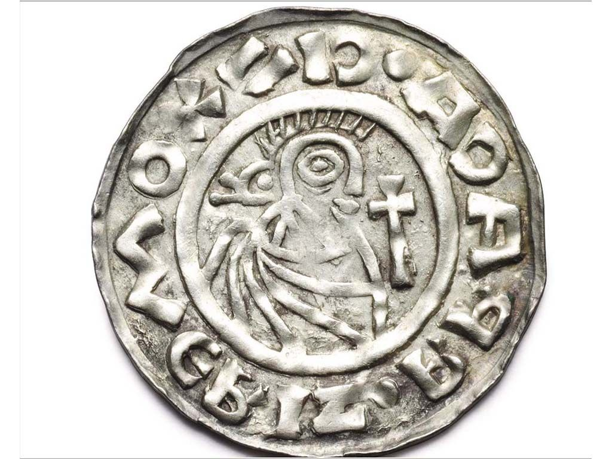

| Splnění KÚ |
10 |
Sekta / Peklo / Skřetí pevnost / Elfí hvozd = 2 KÚ, sběry rozdělené, džinové = sběr jídla |
| 100k jídla pro dráčky |
18
| MAX 11 PRO CELÝ KLAN. Prosím nikdo nevykrmujte sám. Vždy napište předem a snězte předem spočítané jídlo najednou, abyste předešli přehlédnutí. |
| Obětování jednotek se "síla" = 7500 |
1 |
Probíhá většinou 46.- 49. den věku, 1 zbrojnoš = 1000, 1 drak = 40-80k |
| Přenesený art pro klan z minulého věku |
40:x
| x=celkový počet přenesených artů, pokud jste minulý věk byli na S5 a osobně jsme se domlouvali, co vezmete, započítám vám to sám |
| Oběť unikátní jednotky na klanové akci |
5-100
| Záleží na kvalitě jednotky. Pokud to umře někomu jinému, je to na vaší domluvě, jestli vám tahač převede náhradu. Pokud vedení klanu nic neumře, zbytek si nechává pro vlastní účely. |
Vzetí útočníka se střelci do startu |
60:x
| x=počet hráčů s útočníkem, je vhodné se domluvit před začátkem věku |
| - |
-
| - |
| Směna za kredity |
10=1%
| 100% = celkový počet kreditů v pokladnici na konci věku, průměrně 250, odhad na tento věk 150 |